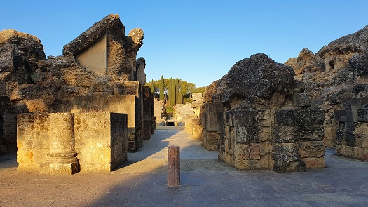
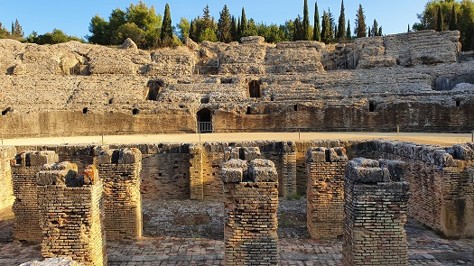
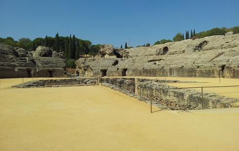
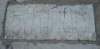
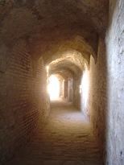

|
ANFITEATRO
El anfiteatro está situado fuera del recinto
amurallado, próximo a una de las puerta principales de la ciudad. Data de época de Adriano. Su eje mayor E-O coincide con la
vaguada natural que se aprovechó para la construcción del graderío. De la
fachada se ha conservado muy poco pero seguiría el esquema clásico. De las
columnas se ha conservado el arranque y un capitel corintio. La planta baja
tiene cuatro galerías, dos al este y dos al oeste que discurren por el ovalo y
dan acceso a la grada.
|
 |
 |
| |
|
|
 |
El Anfiteatro esta construido con opus caementicium
y revestido por opus cuadratum u opus latericium o testaceum.
Los lugares más destacados estaban estucados o recubiertos de mármol. A él se
accedía por la zona este que conserva su pavimento y en algunas losas se pueden
observar tabulae lusoriae, tableros de juego. También en el suelo hay una
serie de agujeros que iluminarían la galería que discurre hacia la fossa
bestiaria. También se hallaron exvotos con plantae pedum que se suponen que eran de
magistrados que buscaban protección y el favor de la divinidad.

|
|
|
|
|
Hacia el centro de la
galería principal se abren dos estancias,
la de la derecha, excavada seria un sacellum, con el suelo de mármol; en
ella se halló un ara. Cerca se hallaron más aras y una placa en bronce.
En la arena se halla la fosa
bestiaria. Espacio subterráneo de planta rectangular dividida en tres naves
longitudinales por ocho pilares. La nave central se prolonga por el eje E-O
hasta los criptopórticos.
La fosa estaba cubierta con madera. Las
naves laterales se supone que estaban destinadas a las estancias para las
fieras o atereceos del anfiteatro. EL nivel de la arenas esta por debajo
del actual y mide 70,6x47,3m. |
|
El podio de la arena mide unos tres metros y
medio, es bastante alto y tras él discurre la galería anular que se
comunica con la arena a través de diez puertas. estaba revestido de
mármol. De esta galería anular partían accesos a la ima cavea y a la
altura del eje menor se abren dos vestíbulos flanqueadas por bancos
empotrados y unos nichos; con dos escaleras de acceso al pulvinar,
tribuna. La grada se aprecia muy
bien desde la arena y conserva la típica distribución. Ima, media y summa
cavea con sus baltei y praecinctiones. El graderío conservado alcanza la
mitad de la altura que tendría el edificio.
En la parte trasera del edificio esta sin excavar y próximo a la porta
libitinensis, se hallaría el spoliarium, donde se depositaba a los caídos
durante la lucha a la espera de la comitiva ritual al final de los juegos. |
 |
Se cree que siempre estuvo visible,
aunque partes de él fueron reutilizadas para construcciones posteriores.
Desde el siglo XVI tenemos grabados y descripciones. Pero en el 1711 un parte
fue demolido para levantar muros que controlasen las crecidas del río. en 1979
se construyó la carretera hacia Extremadura con las "canteras de Itálica".
En 1827 el alcalde de entonces detuvo los trabajo de unos obreros que lo estaban
expoliando y usaban dinamita; pero en 1856 finalmente se detuvo su expolio y en
1860 Demetrio de los Ríos fue nombrado director de las excavaciones....
Uno de los mejor conservados de España, con capacidad para 25.000 personas.
Ver
Anfiteatros romanos
|